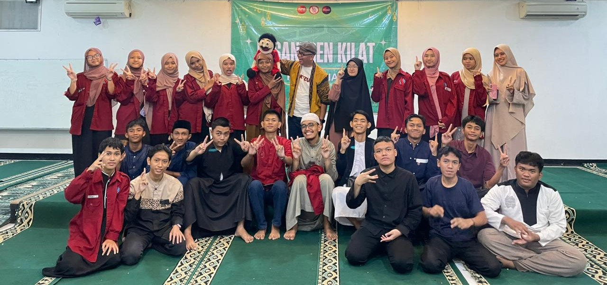

IRMA Al-Istiqomah
Tumbuh Bersama, Belajar Bersama, dan Bermanfaat Bersama
Tumbuh Bersama, Belajar Bersama, dan Bermanfaat Bersama
IRMA (Ikatan Remaja Masjid Al-Istiqomah) adalah wadah bagi para remaja yang ingin bersama-sama belajar, berkegiatan, dan berkontribusi dalam memakmurkan Masjid Al-Istiqomah.
Di sini, setiap anggota dapat belajar menjadi pribadi yang lebih bertanggung jawab, aktif, kreatif, dan peduli terhadap lingkungan di sekitarnya melalui berbagai kegiatan keagamaan, sosial, pendidikan, dan kebersamaan.

Hadir sejak tahun 2019 sebagai wadah bagi para remaja untuk berkumpul, belajar, dan mengambil peran dalam kegiatan di lingkungan Masjid Al-Istiqomah.
Kegiatan mulai mencakup bidang pendidikan dan sosial, memberikan ruang belajar bagi anak-anak di lingkungan sekitar serta berbagi ilmu, waktu, dan tenaga.

Tempat belajar Al-Qur’an dengan suasana menyenangkan, membangun kecintaan pada Al-Qur’an, serta membentuk generasi yang berilmu dan berakhlak..

Belajar membaca, menulis, berhitung, dan memahami pelajaran dengan cara seru, interaktif, dan menyenangkan!.
Kegiatan pesantren kilat yang seru dan edukatif untuk memperdalam ilmu agama, memperkuat iman, serta membangun kebersamaan dan akhlak mulia..
"Membangun generasi muda yang dekat dengan masjid, kuat dalam iman, luas dalam ilmu, dan nyata dalam memberikan manfaat."